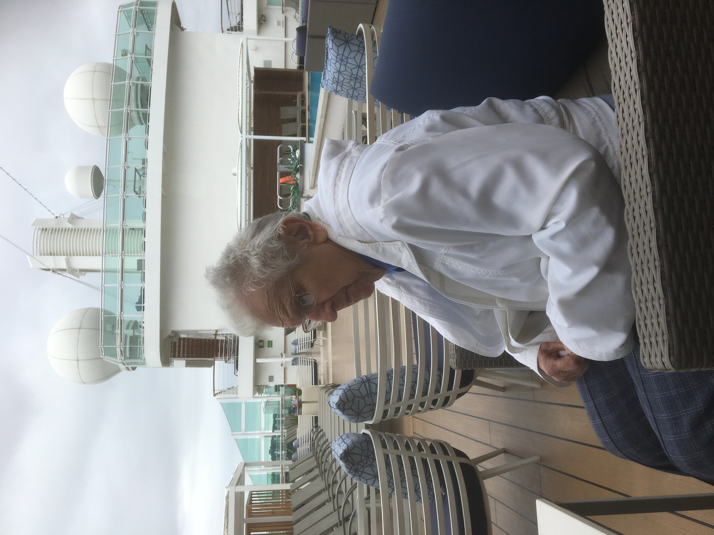

Britannia Cruise 2018
Wednesday May 2nd 2018
Today we arrived early in the morning in Lisbon. Mum decided not to venture off the boat, so I set off on my
own. There was a free bus shuttle from the cruise terminal to the city centre (well, free to us suite occupiers). It took a while to get to
our drop off point, due to the unwieldy one way system, and tons of traffic.

We were dropped off on the Avenida da Liberdade, a tree-lined boulevard in the Baixa Pombalina area. There are three main areas in City Centre
Lisbon to explore. I couldn't leave Mum for too long so I had to pick one, so stayed down in Baixa. Our drop off point was not far from the
Glória Funicular or Ascensor da Glória, which takes you up into the Bairro Alto
area. Although commonly described as a funicular, technically it does not qualify, as the traction is not provided by the cable but by
electric motors on the two cars (hence the overhead power collection). There was a queue to get on board, and a number of fellow cruisers had
chosen to join it. The other area is Alfama, the atmospheric old town with narrow cobblestone streets, medieval and Moorish-style buildings.
I wandered through the nearby Praça dos Restauradores, risking life and limb with the traffic to get there. This plaza includes the large
Monumento aos Restauradores, which memorializes the victory in the Portuguese
Restoration War (1640-1668), which saw the end of the House of Habsburg and the rise of the House of Braganza, which was erected in 1886.
Further down towards the river you come to Praça do Rossio. The official name is
Praça de D. Pedro IV, and there is a Column of Pedro IV in the middle, but the official name has never been used by locals. It has an
amazing mosaic floor which can make you feel a little dizzy.
At the river end of the square is the Estação de Caminhos de Ferro do Rossio,
or railway station, which has a Portuguese late Gothic façade.Not far away is the Elevador de Santa Justa, also known as Elevador do Carmo,
as it goes to the Largo do Carmo in the Bairro Alto. It stands 147 Ft (45m) tall, and is built in the same style as the Eiffel Tower. The
Lift has an observation deck at the top and offers views over Baixa. Curiously, this lift can carry 20 people upwards, but can only take
15 people down.
The other main attraction in the Baixa in on the banks of the Tagus. On 1 November 1755, during the reign of King Dom José I, a great
earthquake, followed by a tsunami and fire, destroyed most of Lisbon. José I's Prime Minister, the Marquis of Pombal, coordinated a massive
rebuilding effort. This included a large, rectangular square in the shape of a "U", open towards the Tagus. The square was named Praça do
Comércio, and has a Triumphal Arch, and an equestrian statue of King José I.
It was a bit of a walk from the drop-off point to get back to Praça do Comércio, and I wasn't sure how much I'd be able to see, because
the square was being prepared to host an outdoor crowd with big screens, as the Eurovision Song Contest was taking place on the coming
weekend, and stage construction/screen erection were in full flow. I did get to see the area from the bus, on the way back to Britannia.
I walked down as far as the Estátua de Dom João I, from where you get a good view
of Castelo de S. Jorge, in the Alfama area.
We left Lisbon in the early evening, with quite a scenic route out along the Tagus. We went past the
Praça do Comércio area, under the Ponte 25 de Abril Bridge, past the
Padrão dos Descobrimentos (Monument to the Discoveries), and the
Belem Tower.